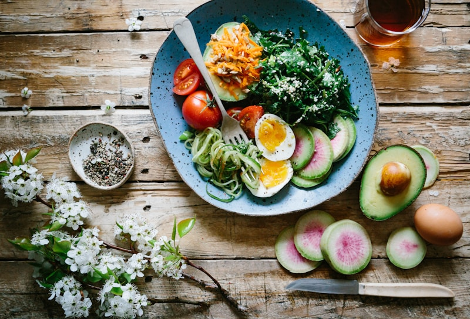
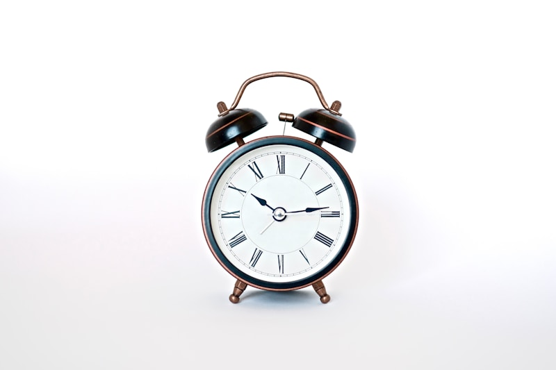

Recomendaciones prácticas para mantener tu bienestar y calidad de vida
La prevención es la mejor medicina. Aquí te compartimos consejos esenciales respaldados por profesionales de la salud para que cuides tu bienestar diariamente. Pequeños cambios en tu rutina pueden hacer una gran diferencia en tu calidad de vida. Recuerda que estos consejos complementan, pero no reemplazan, la consulta médica profesional.
Bebe al menos 8 vasos de agua al día

Incluye frutas y verduras
Actividad física diaria

Duerme 7-8 horas
Cuida tus emociones
Visita a tu médico
Nuestro equipo está listo para cuidar de tu salud. Agenda tu cita hoy mismo.